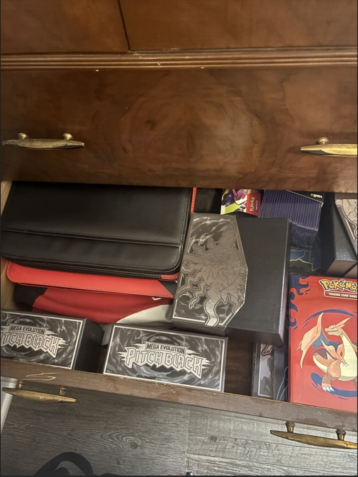

My Pokemon card collection is mainly focused on the XY and Mega Evolution era, which are both my favorite eras of Pokemon. I started collecting cards when I was young because I really liked the artwork, the excitement of opening packs, and the different Pokemon. Some of my personal favorite cards from the XY era are Mega Aggron, Mega Blastoise, and Mega Rayquaza. Some of my favorite cards from the Mega Evolution era are Mega Darkrai, Mega Greninja, and Mega Zeraora.
My collection has more meaning to me than just the value of all the cards. I remember collecting cards, looking for cards that I did not have, and trading cards with friends. The XY era introduced me to Mega Evolution, which made many of the cards from this era more meaningful to me. Looking through my collection again brings back a lot of memories from that time.
Unfortunately, I will have to sell my collection so I can pay my tuition bill. This is a very difficult decision to make because I have spent so long building up my collection, but education is more important. I hope that another Pokemon fan will have the same appreciation as I do for collecting these cards and give them a new home. Even though I am selling them, the memories that I have made collecting them will forever be of more worth than the cards themselves.
Learn more about the Pokémon Trading Card Game on Wikipedia .